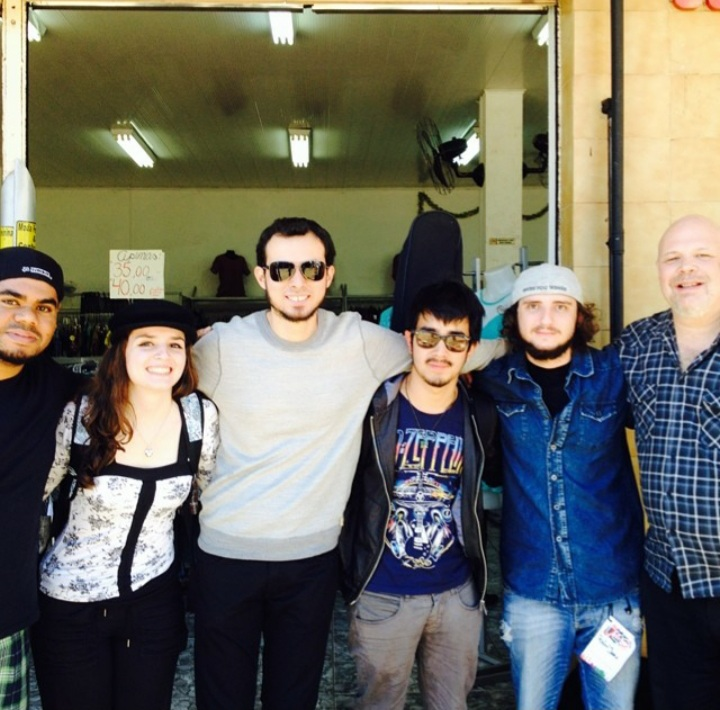
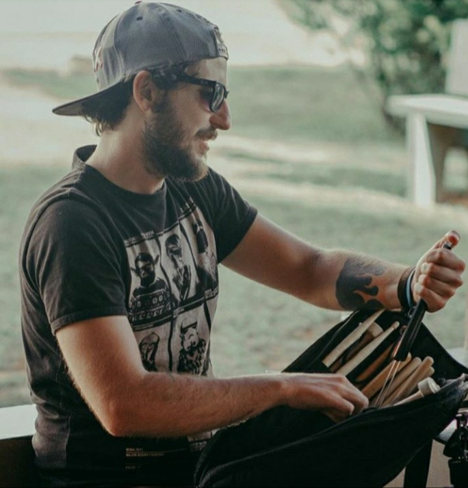
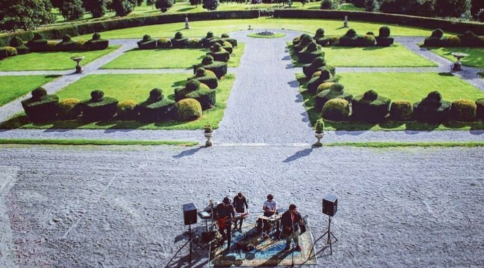
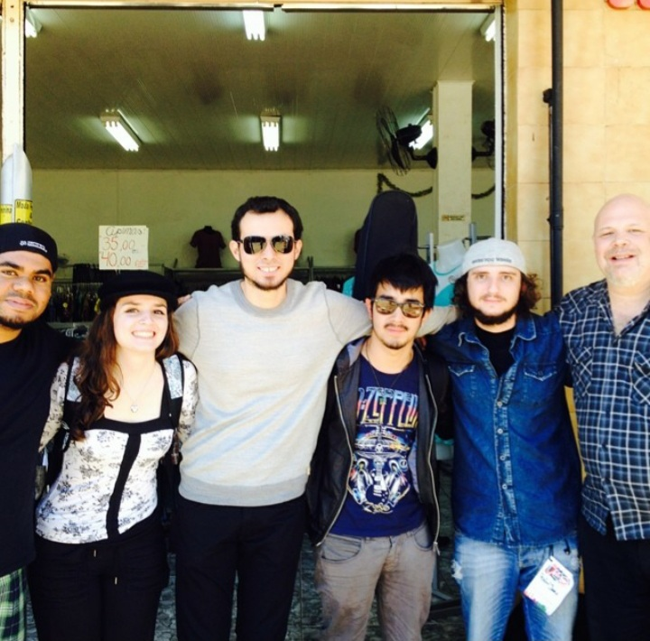
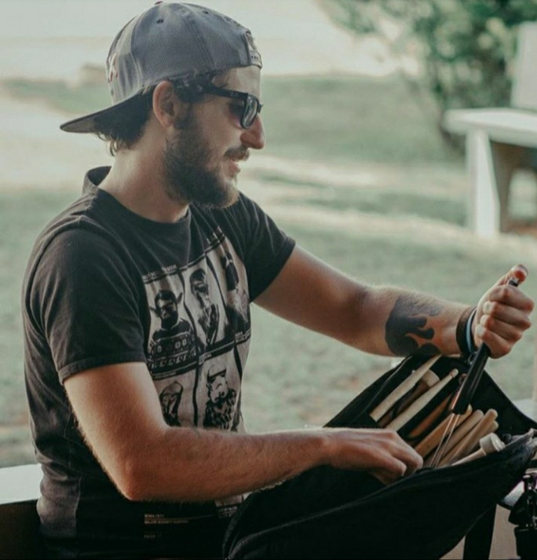
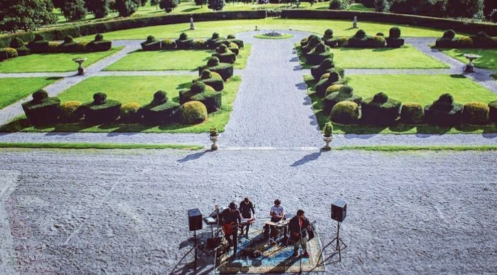

English:
Hi! I'm Rafael Javaro, 29 yo. Natural from Brazil.
I lived in Ireland for 18 months and now I'm back to my home town, Avaré, on the country-side of the state of São Paulo.
I've been a musician my hole life, and that gave me the oportunity to work with a tons of amazing people and I also got the chance to experience lots of different cultures. Now I'm embracing a new challeng of becoming a Full-Stack Software Developer.
Português:
Olá, eu sou o Rafael Javaro, tenho 29 anos, natural de Avaré, São Paulo - Brasil.
Morei no exterior por um e meio, mais especificamente na Irlanda, onde tive a chance de estudar e aprimorar uma segunda língua, o Inglês.
Ser um músico morando fora do seu país de origem me deu a oportunidade de conhecer e vivenciar várias culturas diferentes e a chance de trabalhar com pessoas genuinamente incríveis.
Agora estou encarando o desafio de me tornar um Desenvolvedor de software Full-Stack.